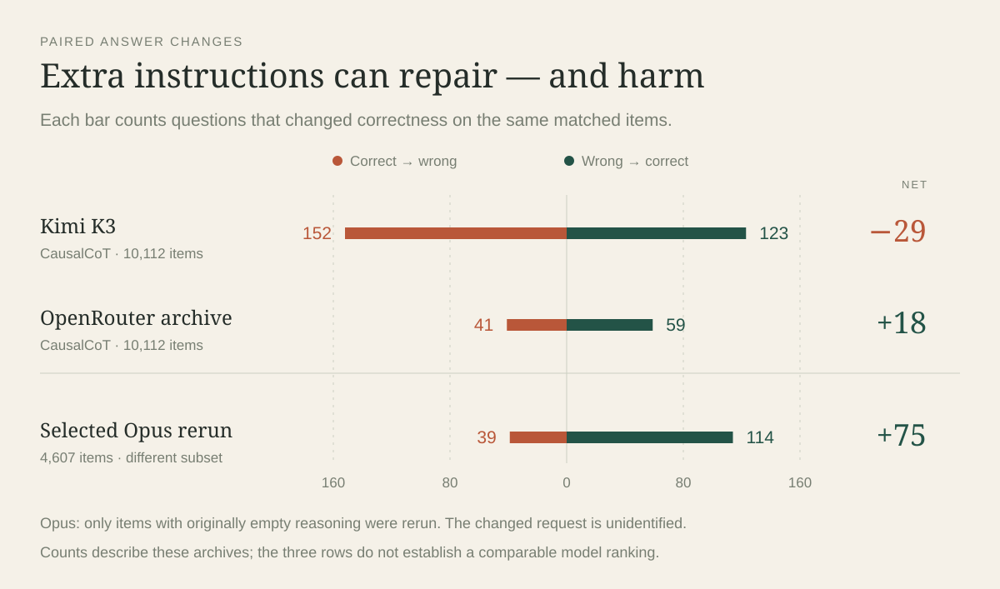
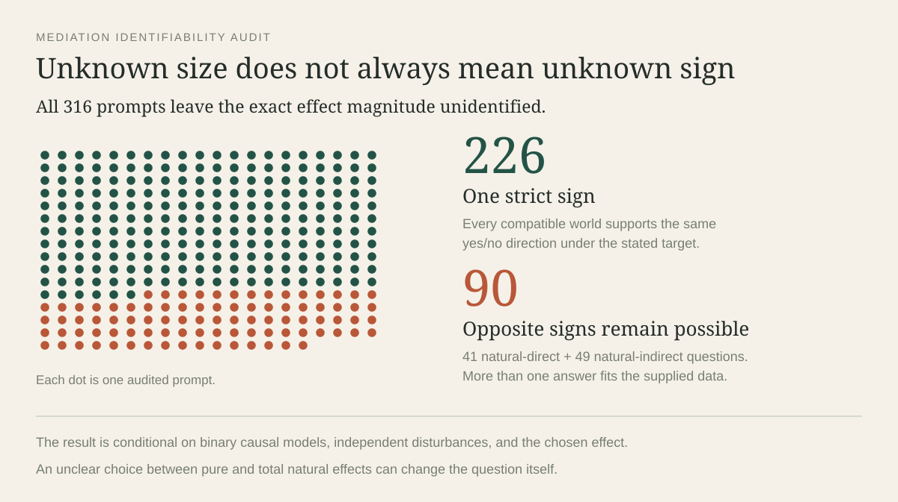
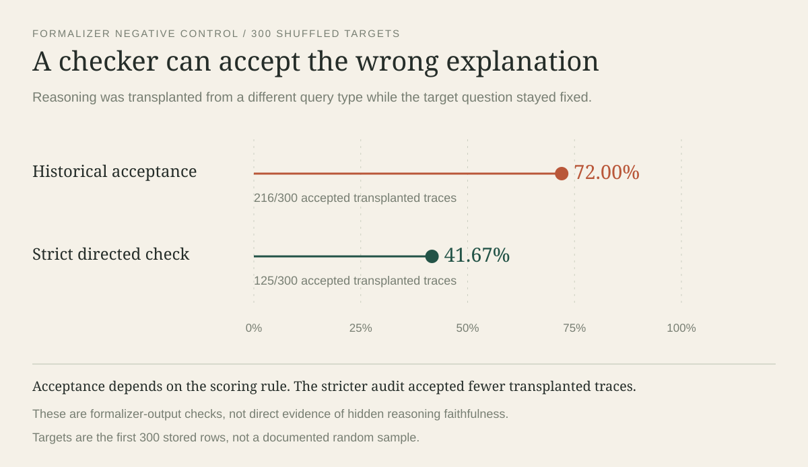
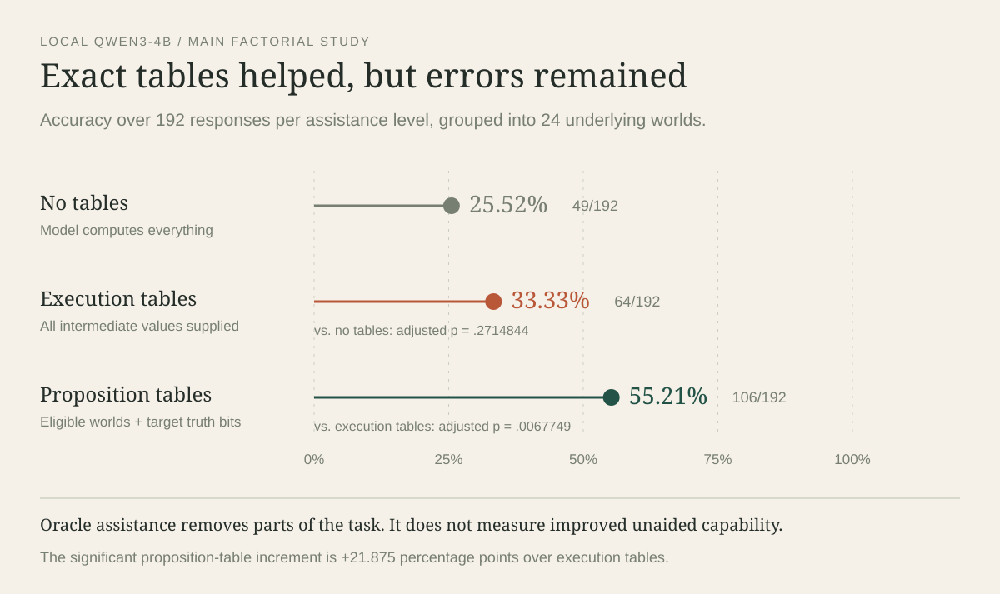

The work tested answers, benchmark labels, explanations, executable contracts and internal model measurements. Each result below keeps its own denominator and evidence status. A number from one study should not quietly become a score for another.
“Correct” in a CLadder answer table means agreement with the released answer key. The benchmark audit separately asks whether that key follows from the displayed problem. A percentage-point change is the difference between two percentages: 50% to 60% is a gain of 10 points.
The archived CLadder answer scores
The main archive contains 91,272 recorded responses in 12 conditions, matched to the 10,112-question CLadder v1.5 reference. The historical prompts, deployment versions and generation settings are not consistently available. These are archived measurements, with different coverage and selection rules; they do not form one fair release-level leaderboard.
Scroll across the figure →

| Recorded model / archive | Condition | Correct / available | Accuracy | Scope |
|---|---|---|---|---|
| Opus 4.8 | Baseline | 9,235 / 10,105 | 91.39% | Near-full historical archive |
| Sonnet 4.6 | Baseline | 9,204 / 10,102 | 91.11% | Near-full historical archive |
| Gemini 2.5 Flash | Baseline | 8,626 / 10,097 | 85.43% | Near-full historical archive |
| GPT-5.4 Nano | Baseline | 5,539 / 10,108 | 54.80% | Near-full historical archive |
| GPT-5.5 | Baseline | 5,482 / 5,765 | 95.09% | Partial: 57.01% of canonical items |
| Opus 4.8 | Selected forced-thinking rerun | 4,157 / 4,607 | 90.23% | Selected IDs with empty original reasoning fields |
| Kimi K3 | Direct | 9,566 / 10,112 | 94.60% | Full paired archive |
| Kimi K3 | CausalCoT | 9,537 / 10,112 | 94.31% | Same 10,112 IDs |
| OpenRouter archive — underlying model unidentified | Direct | 9,573 / 10,112 | 94.67% | Full paired V1 archive |
| OpenRouter archive — underlying model unidentified | CausalCoT | 9,591 / 10,112 | 94.85% | Same V1 IDs |
| GPT-labelled pilot | Direct | 20 / 20 | 100.00% | Small separate pilot |
| GPT-labelled pilot | CausalCoT | 20 / 20 | 100.00% | Same 20 pilot IDs |
Unparsed final answers count as wrong. There are 449 unparsed records: 443 empty and six nonempty. Reading the actual final text changes 27 stored prediction fields: two Sonnet self-corrections, 20 OpenRouter direct answers and five truncated OpenRouter CausalCoT outputs. An empty Fable-labelled synthetic file has zero observations; its stored 0.0 is not a measured 0% accuracy.
When the same questions received different instructions
| Comparison | Both correct | Repairs | Harms | Both wrong | Net change |
|---|---|---|---|---|---|
| Kimi: direct → six-step CausalCoT | 9414 | 123 | 152 | 423 | −29 / 10,112; −0.287 points |
| OpenRouter V1: direct → CausalCoT | 9532 | 59 | 41 | 480 | +18 / 10,112; +0.178 points |
| Selected Opus rerun | — | 114 | 39 | — | +75 / 4,607; +1.63 points |
Kimi’s paired difference has an exact McNemar p-value of 0.0911 and a reported 95% target-bootstrap interval of −0.613 to +0.030 points. This run does not establish a reliable overall prompting advantage. On counterfactual questions alone, Kimi scores 3,400 / 3,792 direct and 3,371 / 3,792 with CausalCoT.
For the selected Opus IDs, the original score is 4,082 / 4,607 and the rerun is 4,157 / 4,607. Only 354 reruns contain a nonempty new reasoning field. The exact changed request was not recovered, so “forced thinking” is an archive label rather than a verified account of additional internal computation.
Additional synthetic answers, attempts and copies
A separate GPT-5.5-labelled file has 9,881 noncanonical structured items, of which 9,176 are stored correct (92.87%). Their rung counts are 3,200 association, 3,010 intervention and 3,671 counterfactual. This supports the recorded count, while generator provenance and prompt equivalence remain incomplete. Historical documents also report Opus synthetic accuracy of 90.00% and rung-three scores of 92.21% versus 86.77%; the matching Opus denominator and raw results were not established.
Raw paired histories contain 20,264 Kimi rows for 20,224 unique item/condition keys, 21,166 OpenRouter rows for 20,224 keys and 80 GPT pilot rows for 40 keys. Extra attempts and byte-identical copies are not extra independent questions. Two 200-row Opus pilot sources are identical; the rung-one/two pilot has 196 rows, selected as 100 originally correct and 96 incorrect.
Source: research inventory report, pp. 5–9, 63, 86.
Some recorded “errors” came from the benchmark
A model can disagree with the answer key while following the displayed rules. The audit checked mechanisms, arithmetic, wording and whether the information was sufficient. Its corrections are local and bounded; they do not certify a completely repaired benchmark.
Scroll across the figure →

| Audit | Questions examined | Finding | What it establishes |
|---|---|---|---|
| Deterministic DiamondCut rules | 158 | 37 answer labels flip | The displayed mechanism differs from the generator in a specific branch |
| Transparent numerical questions | 5048 | 85 displayed-value disagreements; 9 survive rounding allowance | Nine robust marginal-probability discrepancies |
| Arrowhead mediation questions | 316 | 226 sign-resolved; 90 sign-unresolved | All magnitudes remain unidentified in the stated model class |
| ETT wording | 1264 | 108 repeat the factual treatment state; 41 old controls withdrawn | Retained independently checked control pool: 4,567 |
| Nonce Boolean counterfactuals | 726 | 23 released-label disagreements; 11 within 568 factually consistent items | Conditional on complete-equation interpretation |
| Nonce adjustment questions | 569 | 391 unique observed method; 134 require an unobserved covariate; 44 have two valid methods | Graphical adjustment need not select a unique ranked answer |
The 37 deterministic discrepancies plus nine robust numerical discrepancies give 46 specific label corrections. On the deterministic set, Sonnet and both OpenRouter conditions go from 0 / 37 released-label matches to 37 / 37 displayed-world matches; GPT does the same on its 24 available items. Kimi direct changes from 1 / 37 to 36 / 37, and CausalCoT from 2 / 37 to 35 / 37. Across all 46 corrections, Kimi totals become 9,610 / 10,112 direct and 9,579 / 10,112 CausalCoT: a net loss of 31 with the scaffold.
For mediation, the same displayed percentages can fit more than one causal world. The 90 sign-unresolved questions include 41 natural-direct and 49 natural-indirect cases. For one item, compatible worlds give an effect of −0.00805358 or +0.0293. The conclusion depends on the stated binary model class and the chosen pure-effect target; informal natural-effect wording can leave that choice unclear.
Corrected numerical controls and visible reasoning
| Recorded configuration | Correct / evaluated | Accuracy |
|---|---|---|
| Opus baseline | 4,355 / 4,566 | 95.38% |
| Opus selected rerun | 2,122 / 2,296 | 92.42% |
| Sonnet baseline | 4,513 / 4,564 | 98.88% |
| Gemini baseline | 4,462 / 4,560 | 97.85% |
| Nano baseline | 2,657 / 4,565 | 58.20% |
| GPT-5.5 partial baseline | 2,687 / 2,691 | 99.85% |
| Kimi direct | 4,537 / 4,567 | 99.34% |
| Kimi CausalCoT | 4,549 / 4,567 | 99.61% |
| OpenRouter direct | 4,458 / 4,567 | 97.61% |
| OpenRouter CausalCoT | 4,488 / 4,567 | 98.27% |
| GPT pilot direct | 10 / 10 | 100.00% |
| GPT pilot CausalCoT | 10 / 10 | 100.00% |
The old control pool of 4,608 is superseded by 4,567. The removed 41 items lacked the treatment-switching condition assumed by the old checker. This is a certification mistake, not proof of an arithmetic mistake by every model or of a wrong label for every repeated-state question.
Sonnet has 10,082 nonempty reasoning fields, including 3,788 containing only Yes/No. That leaves 6,294 substantive fields and 3,808 responses without substantive visible steps. All 10,108 Nano baseline responses lack substantive intermediate text. Missing text cannot locate an intermediate error or show that no internal reasoning occurred.
Exploratory trace reading and judge attempts
A selected 20-pair Kimi audit, drawn from 168 eligible harms or persistent failures, found seven AND-gate/path-sufficiency cases, four target/effect substitutions, three negation-as-missing-edge cases, three default-zero cases and three other cases. This is a purposive sample rather than a population estimate.
The broader selected review has 261 cases across 168 questions: 151 reviewed cases, 175 assistant readings and 110 automatic statuses. Twenty-four double-read cases have 22 stage agreements. Eighty-one qualified localizations divide into 41 mechanism/graph, 21 identification, 15 target and four computation cases; there are 112 disputes, 33 unlocalizable cases and 35 without an established substantive error. These are assistant judgments, not independent human validation.
| Judge protocol | Attempts / completed annotations | Observed outcome | Limit |
|---|---|---|---|
| Legacy GPT-mini | 20 successful annotations | 6 repairs, 1 harm, 13 persistent failures | Known pair outcome reveals the gold label |
| Explicit gold-aware judge | 50 attempts / 35 successful | 9 repairs, 10 harms, 16 persistent failures | All 16 persistent failures excluded as unsupported labels; 9 of 19 stage cases coded derivation |
| Sonnet two-pass | 50 oracle attempts; 46 validated blind solutions; 39 clean oracle/adjudication records | 27 accepted solutions; 0 successful stage annotations | All 27 trace-stage requests failed; cannot report completed stage diagnoses |
Source: research inventory report, pp. 8–10, 21–22, 26, 50, 103.
What DoVerifier could and could not verify
The local DoVerifier work repaired probability parsing, graph rules and proof-search validation. A successful check certifies a represented expression under a supplied graph. It does not automatically certify the accompanying explanation or answer.
Scroll across the figure →

| Local measurement | Result | Meaning |
|---|---|---|
| Assigned-outcome Rule 1 stress test | Baseline accepts the invalid deletion in 120 / 120; repaired version in 0 / 120 | A specific graph-rule defect was repaired |
| Predicted graphs in Kimi CausalCoT | 6,250 usable; 4,980 match reference edges | Coverage-limited extraction |
| Query type | 6,039 / 7,059 parseable cases agree | Unavailable parses are not demonstrated cognitive errors |
| Numeric result | 2,605 / 7,903 usable scalar-oracle cases agree | A restricted operational test |
| All six intermediate checks | 169 / 1,834 eligible records pass | Not independent whole-trace certification |
| Causal-expression extraction | 3,446 parsed; 625 ambiguous; 669 parse failures; 5,372 outside support | These categories account for 10,112 records |
| Canonical target match | 1,340 / 3,446 | Identity of represented expressions |
| Gold-graph directed and mutual acceptance | 1,340 / 2,863 eligible | Different scope from predicted-graph acceptance |
| Predicted-graph acceptance | 947 / 2,020 eligible | Do not compare rates without matching eligibility |
| Saved proof paths | 4,574 paths; every path has zero steps | No nontrivial symbolic rescue in this local full run |
Twelve retained baseline-versus-repair probes include invalid observation deletion, lost assigned values, undeclared variables, cycles and malformed trailing text. Positive controls preserve valid parsing and the motivating three-step proof. The saved test history grows from 66 original tests to 120 after repair and 178 at full-evaluation verification; these counts are implementation checks, not new LLM samples.
The later counterfactual adapter
| Measurement | Result |
|---|---|
| Covered counterfactual IDs / condition records | 3,792 / 7,584 |
| Independently computed answers | 3,634 |
| Confounded ETT cases marked underidentified | 158 |
| Released-label matches among computed answers | 3,600 / 3,634 |
| Stochastic recomputation / source replay sign disagreements | 51 |
| Composite score including reference-terminal replay | 3,792 / 3,792 — compatibility audit |
| One explicit target extracted from direct / CausalCoT summaries | 108 / 3,792; 1,570 / 3,792 |
| Ambiguous direct / CausalCoT target extractions | 17; 707 |
| Trace-only solver answers | 0 direct; 1 CausalCoT |
The perfect composite combines independent calculations with replay from the reference. It must not be presented as perfect independent causal accuracy. Narrow trace extraction chiefly measures parser coverage and explicit fact availability.
Historical formalizer and unrelated-trace controls
| Formalizer / acceptance measurement | Accepted / evaluated |
|---|---|
| Gemini original question-visible historical rule | 4,535 / 4,671 |
| Gemini question-hidden historical rule | 4,076 / 4,671 |
| Sonnet historical rule | 2,369 / 2,478 |
| Gemini wrong final answers accepted | 323 / 331 |
| Sonnet wrong final answers accepted | 79 / 89 |
| 300 unrelated donated traces: exact match | 182 / 300 |
| 300 unrelated donated traces: historical equivalence | 216 / 300; Wilson 95% 66.7–76.8% |
| Same 300 originals: question-visible / hidden | 291 / 300; 257 / 300 |
| Rare-query unrelated-trace top-up | 145 / 200 accepted; 11 exact; 195 successfully formalized |
All 4,671 shuffled traces are exact copies from another query type; none keeps its original trace. The 300 scored targets are the first 300 rows, not a documented random sample. In the question-visible comparison, 212 pass both original and transplant, 79 original only, four transplant only and five neither. Accepting known unrelated reasoning exposes a gap between expression acceptance and explanation validity, rather than proving an unsound do-calculus derivation.
| Small evaluator-development run | Acceptance |
|---|---|
| 200-row pilot | 116 / 200 |
| 200-row question-hidden pilot | 80 / 200 |
| Revised 200-row pilot | 131 / 200 |
| Revised question-hidden pilot | 91 / 200 |
| Smoke test | 10 / 20 |
| Five variants on the same 30 items | 24, 24, 26, 28 and 30 / 30 |
The historical question-hidden comparisons change evaluator versions as well as question access: two full-Gemini records and nine pilot records change verdict with unchanged raw formalizer output. The resulting difference cannot be attributed entirely to removing the question.
External paper claims kept separate
The source paper reports symbolic-verifier scores of 73%, 94%, 90% and 84%, and feedback scores of 93%, 99%, 98% and 87% for four model configurations. Its complete original experimental bundle was not available in the local audit. The local project reproduced a motivating proof and preserved diagnostic feedback templates, while a completed local model-feedback experiment was not established. These paper numbers are literature context rather than replicated local results.
Source: research inventory report, pp. 6–7, 12–15.
Good answers and good executable contracts were different things
V2 generated finite Boolean worlds with complete mechanisms and explicit operation instructions. YES means the target holds in every compatible input, NO means it holds in none, and UNDETERMINED means both outcomes are possible. This is logical certainty rather than a majority vote.
| Recorded configuration | Correct / evaluated | Accuracy |
|---|---|---|
| Opus 4.8 | 288 / 288 | 100.00% |
| GPT-5.5 | 288 / 288 | 100.00% |
| Kimi K3 | 287 / 288 | 99.65% |
| Sonnet 4.6 | 286 / 288 | 99.31% |
| Nano | 277 / 288 | 96.18% |
| Gemini | 190 / 288 | 65.97% |
These 288 baseline tasks per model include related versions of 48 held-out worlds. On the common 96 core tasks, the brief answer, generic reasoning, declared contract answer and software execution can be compared directly.
| Model | Brief answer | Generic reasoning | Declared contract answer | Strict execution | Operation-aware execution |
|---|---|---|---|---|---|
| Opus | 96 / 96 | 96 / 96 | 96 / 96 | 96 / 96 | 96 / 96 |
| Sonnet | 95 / 96 | 95 / 96 | 96 / 96 | 78 / 96 | 96 / 96 |
| Gemini | 66 / 96 | 73 / 96 | 35 / 96 | 83 / 96 | 84 / 96 |
| Kimi | 95 / 96 | 96 / 96 | 96 / 96 | 96 / 96 | 96 / 96 |
| Nano | 93 / 96 | 90 / 96 | 89 / 96 | 94 / 96 | 94 / 96 |
| GPT-5.5 | 96 / 96 | 96 / 96 | 96 / 96 | 96 / 96 | 96 / 96 |
Gemini prints 78 faithful contracts but attaches wrong declared answers to 50 of them. Executing those unchanged faithful objects corrects all 50. Yet only 10 / 96 pass the strongest strict certificate. Nano has four mapping errors despite a faithful contract and valid proof; a mixed set of 15 true inputs and one false input requires UNDETERMINED even if the model says NO.
Operation-aware execution was developed after inspecting these outputs. When an intervention overwrites an equation, it can ignore that old equation under the stated operation. It recovers 18 Sonnet and one Gemini execution with no loss relative to strict execution. Sonnet’s declared answers were already 96 / 96, so this improves executability rather than Sonnet’s answer accuracy. Counterfactuals must preserve the old mechanism for factual root selection.
Fidelity, certificates, errors and perturbation sensitivity
| Model | Full-model fidelity | Strict certified | Operation-aware certified | Execution repairs / harms versus declared answer |
|---|---|---|---|---|
| Opus | 96 / 96 | 95 / 96 | 95 / 96 | 0 / 0 |
| Sonnet | 74 / 96 | 69 / 96 | 88 / 96 | 0 / 0 |
| Gemini | 78 / 96 | 10 / 96 | 13 / 96 | 53 / 4 |
| Kimi | 96 / 96 | 96 / 96 | 96 / 96 | 0 / 0 |
| Nano | 89 / 96 | 80 / 96 | 81 / 96 | 6 / 1 |
| GPT-5.5 | 96 / 96 | 95 / 96 | 95 / 96 | 0 / 0 |
Sonnet’s operation-aware certificate score rises 69 → 88; Gemini 10 → 13; Nano 80 → 81. Sonnet still has six count errors and two witness errors. Full faithful transcription remains a different criterion from query-relative correctness: 22 Sonnet, six Gemini and two Nano objects are query-equivalent without full fidelity.
| Perturbation | Joint correctness / effect |
|---|---|
| Oracle-changing mechanism edits | 48 / 48 Sonnet, Opus and GPT; 47 / 48 Kimi; 44 / 48 Nano; 19 / 48 Gemini |
| Gemini renaming / reorder / narrative pairs | 8 / 16 jointly correct in each; answer changes 7 / 6 / 7 |
| Causal → program framing | Gemini 18 repairs and 17 harms; Nano 3 and 3; Sonnet 1 and 1; Kimi 1 and 0 |
| Framing inference | At most one net change / 96 pairs for each model; no Holm-adjusted significant contrast |
| Erasing overwritten equations safely | Counts and labels preserved in 32 / 32 INTERVENE/FRESH tests |
| Unsafe counterfactual erasure | Support expands in 18 / 48; two labels change |
The controlled design’s independent scalar and bit-parallel evaluators agree. Pre-call checks record 128 causal/program matches, 64 gate edits that change answers, 21 rename checks, 22 reorder checks and 21 narrative equivalents. The core label distribution is 32 YES, 32 NO and 32 UNDETERMINED; a family/role-majority baseline gets 46 / 96. Questions from the same world are clustered together for uncertainty.
Source: research inventory report, pp. 17–19, 27, 49.
Specific reminders helped selected questions, with limited replication
Two public studies each used 36 selected Boolean counterfactual questions and six recorded model endpoints. The semantic bundle reminded the model to preserve the requested target, AND/OR/NOT rules, intervention and background conditions. The follow-up separated those reminders into components.
| Model | Initial generic → bundle | Follow-up generic → bundle |
|---|---|---|
| Opus | 31 → 33 / 36 | 35 → 36 / 36 |
| Sonnet | 35 → 36 / 36 | 36 → 36 / 36 |
| Gemini | 16 → 21 / 36 | 21 → 30 / 36 |
| Kimi | 26 → 32 / 36 | 30 → 36 / 36 |
| Nano | 23 → 23 / 36 | 26 → 32 / 36 |
| GPT-5.5 | 26 → 36 / 36 | 30 → 36 / 36 |
Only the initial GPT-5.5 contrast survives the corrected six-model, mechanism-cluster analysis: 26 → 36 correct, ten repairs and no harms, +27.78 points, 95% unadjusted cluster interval 12.90–43.75 and Holm p = 0.046875. No follow-up model contrast survives correction. A completion cue can make a convention explicit or add it; its benefit need not mean the original answer was invalid under every possible reading.
Each arm has 20 distinct mechanisms after ignoring variable aliases; 17 mechanisms recur across arms. The follow-up uses new question IDs but substantially overlaps the initial mechanisms. It also raises the output cap from 3,072 to 4,096 tokens. Pooling them as 72 independent worlds would exaggerate the evidence.
Every condition in both public studies
| Model | Original | Identical repeat | Rename | Reorder | Generic reasoning | Semantic bundle | Mechanism edit |
|---|---|---|---|---|---|---|---|
| Opus | 30 | 32 | 30 | 28 | 31 | 33 | 33 |
| Sonnet | 36 | 36 | 36 | 36 | 35 | 36 | 35 |
| Gemini | 15 | 14 | 17 | 12 | 16 | 21 | 22 |
| Kimi | 26 | 26 | 28 | 22 | 26 | 32 | 27 |
| Nano | 19 | 21 | 22 | 18 | 23 | 23 | 17 |
| GPT-5.5 | 20 | 23 | 26 | 26 | 26 | 36 | 25 |
Gemini has one missing response in the original condition and one in mechanism-edit. Only the original missing response is recorded as truncated; all other initial cells have no missing responses. All completed truncated outputs count as nonanswers rather than being rescued by an early label.
| Model | Original | Repeat | Generic reasoning | Target cue | Gate cue | Intervention cue | Complete-equation cue | Full bundle |
|---|---|---|---|---|---|---|---|---|
| Opus | 35 | 35 | 35 | 34 | 36 | 34 | 35 | 36 |
| Sonnet | 35 | 35 | 36 | 36 | 34 | 36 | 36 | 36 |
| Gemini | 24 | 20 | 21 | 23 | 28 | 27 | 31 | 30 |
| Kimi | 29 | 29 | 30 | 31 | 34 | 32 | 36 | 36 |
| Nano | 25 | 24 | 26 | 25 | 33 | 27 | 32 | 32 |
| GPT-5.5 | 27 | 28 | 30 | 28 | 35 | 31 | 35 | 36 |
Every follow-up cell has zero missing and zero truncated responses. The final parser uses the last explicit declaration from a completed response; five later declarations correct earlier ones. Historical progress summaries can retain older scores.
Retries, software mutants and request inventory
| Retry of 17 selected Gemini nonanswers | Answers recovered | Correct / requested | Other outcomes |
|---|---|---|---|
| Same token cap | 13 | 10 / 17 | 4 truncated |
| 12,288-token cap | 15 | 14 / 17 | 2 provider errors |
The paired retry accuracy p-value is 0.34375. These selected-failure attempts do not replace the primary scores or estimate overall missingness.
| Deliberately wrong software rule | Applicable held-out tasks | Valid altered queries | Changed labels | Empty contexts |
|---|---|---|---|---|
| Treat observation as intervention | 16 | 16 | 8 | 0 |
| Reuse fresh roots instead of factual roots | 48 | 48 | 22 | 0 |
| Treat outcome as positive effect | 64 | 64 | 23 | 0 |
| Replace AND with OR | 74 | 70 | 26 | 4 |
| Filter factual evidence after intervention | 48 | 41 | 4 | 7 |
These mutations are executable wrong-rule controls rather than observed neural algorithms. Calibration versions respectively change 3 / 6, 8 / 15, 11 / 21, 10 / 32 and 0 / 15 labels.
Recorded requests total 6,382: 12 pilot, 216 calibration, 2,880 held-out, 1,512 initial public, 1,728 follow-up and 34 retries. The recorded experiment subtotal is $59.46, based on provider-reported or catalog-estimated costs, rather than a reconciled account statement.
Source: research inventory report, pp. 20–21, 28–33.
The solver checked what the supplied information could identify
V3 added no model calls. It built a rational-arithmetic solver for binary treatment and outcome worlds, and re-examined the 576 V2 contract objects. It distinguishes an unidentified interval, impossible constraints and an undefined query with zero-probability evidence.
| Exact-solver validation | Count / outcome |
|---|---|
| Enumerated histograms | 330 at N = 4; 6,435 at N = 8 |
| Independent factual/surgical formula agreements | 6,765 / 6,765 grid records |
| Information classes | 3,792 grid-class checks; 3,498 distinct classes after 294 repeated signatures |
| Defined range comparisons | 39,276 agree; 36,684 distinct class-target bounds |
| Undefined distinct conditional queries | 8,790, with zero-probability evidence |
| Unique request outputs passing certificate checks | 45,474 / 45,474 |
| Adding intervention information | 34,998 comparisons; 21,711 strict narrowings; no widened defined interval |
| Monotonicity-compatible classes | 1,452 / 3,498; 15,402 certified targets; 4,086 strict narrowings |
| Monotonicity-inconsistent classes | 2,046, each with an infeasibility certificate |
| Saved examples rechecked during the audit | 9 / 9 |
These are constructed validation grids rather than estimates of real-world prevalence. The four-state grid is nested in the eight-state grid. A transportation-table argument establishes sharp continuous bounds for these signatures; a dual certificate shows that no compatible world can exceed the claimed bound.
| Information supplied | Identified conclusion |
|---|---|
| Equal observed cells of 1/4 | ATE can lie anywhere in [−1/2, +1/2] |
| Add P(Y₀=1) = P(Y₁=1) = 1/2 | ATE = 0, but probability of necessity remains [0, 1] |
| Observed cells (1/4, 1/4, 1/8, 3/8), plus P(Y₀=1)=1/4 | ATE remains [1/8, 5/8]; ETT is exactly 3/4 |
| Know all eight response-type weights are 1/8 | A counterfactual probability can be exactly 1/2 while an individual outcome stays unknown |
A matching answer can hide a different set of worlds
| Contract criterion | Strict interpreter / 576 | Operation-aware / 576 |
|---|---|---|
| Full faithful transcription | 529 | 529 |
| Executable object | 544 | 563 |
| Exact excluded/false/true signature | 540 | 559 |
| Correct executed answer label | 543 | 562 |
| Executed root counts match the requested query | 540 | 559 |
| Valid proof | 459 | 475 |
| Query-equivalent certified object | 453 | 469 |
Three Nano objects keep the expected coarse label after omitting required evidence. Two declared answers are correct; one is not. Another omission changes YES into UNDETERMINED. Conversely, a redundant omitted condition can leave every world unchanged. Equal labels, equal counts and equal world signatures therefore answer different questions.
All-equation relevance results
| Operation | Core tasks | Equation occurrences | Unchanged under every replacement | Unchanged across valid replacements | Labels unchanged but signature can change | Replacement evaluations |
|---|---|---|---|---|---|---|
| All | 96 | 1056 | 365 | 410 | 116 | 15048 |
| Observe | 16 | 176 | 45 | 46 | 27 | 2516 |
| Intervene | 16 | 176 | 83 | 83 | 15 | 2516 |
| Counterfactual | 48 | 529 | 168 | 187 | 59 | 7600 |
| Fresh | 16 | 175 | 69 | 94 | 15 | 2416 |
Every allowed one-parent or two-parent truth table was substituted for one equation while retaining its named parents. Across alternatives, 3,204 keep the label while changing the query signature; 1,207 also keep the count triple. Twenty-five FRESH equation occurrences preserve post-action truth but permit impossible factual evidence. Removing individually irrelevant equations together can still change the answer: eight single replacements preserve a two-root signature in one fixture, while replacing both equations changes NO to YES. These are software interventions, not additional model responses.
Source: research inventory report, pp. 23–25, 34–36.
Showing the truth table helped, but did not solve the task
V4 collected 1,104 scored fresh outputs from one local Qwen3-4B Q4_K_M configuration, with one stochastic response per condition. Main and selection studies use 24 worlds and 48 questions. The task and output design isolate what information or wording changes; supplying oracle truth is assistance rather than better unaided model capability.
Scroll across the figure →

| Recorded configuration | Correct / evaluated | Accuracy |
|---|---|---|
| Raw question | 49 / 192 | 25.52% |
| Full execution tables | 64 / 192 | 33.33% |
| Eligible roots and proposition truth | 106 / 192 | 55.21% |
Giving eligible inputs and the exact proposition truth improves 21.875 points over full execution tables: 95% world-cluster interval 11.979–31.25; Holm-six p = 0.0067749. Full execution tables improve 7.8125 points over raw questions, but adjusted p = 0.2714844. Explicit ALL_TRUE/ALL_FALSE/MIXED vocabulary has no uniform benefit: it hurts raw questions by 9.375 points and helps proposition-assisted questions by 10.4167 points; the interaction is +19.7917 points, interval 10.4167–30.2083, adjusted p = 0.0152588.
The main factorial crosses causal/program wording, three information levels and two label vocabularies. Every output completes with a legal answer code. In the 192 proposition-table responses, 86 wrong labels are accompanied by false claims about the supplied truth bits. The raw conditions score 0 / 16 on NO-oracle queries in each condition; the standard-label outputs always say YES on those queries.
The follow-up controls retained both gains and null results
| Study / change | Correct counts | Estimated change | 95% interval in points | Adjusted inference |
|---|---|---|---|---|
| Add all-root target-truth vector | T only 23 / 48; neither 17 / 48; both 22 / 48; membership only 11 / 48 | T main effect +17.7083 | [8.3333, 28.125] | Holm-three p = 0.03808594 |
| Delete context but retain eligible truth table | Full 53 / 96; minimal 49 / 96 | −4.1667 | [−15.625, 7.2917] | All three adjusted p = 1 |
| Remove irrelevant input columns | Retained 53 / 72; removed 66 / 72 | +18.0556 | [6.9444, 29.1667] | Holm-three p = 0.046875 |
| Add redundant input extensions | Projected definite uncertainty 5 / 24 → 1 / 24 | Opposite to intended prediction | No supported reversed effect | Adjusted p = 0.25; interaction p = 1 |
The membership-vector effect is −7.2917 points and its interaction with target truth +10.4167 points; both adjusted p = 0.431640625. A null membership effect does not prove evidence selection was already correct. The target-truth intervention includes polarity and comparison formation, so its benefit is not purely arithmetic.
Removing context increases uncertainty answers from 50 / 96 to 77 / 96: mixed cases improve 20 / 32 → 31 / 32, but definite cases fall 33 / 64 → 18 / 64. Removing input columns has 15 repairs and two harms. All 36 projected explicit-label cases are correct, a ceiling on this small constructed set rather than a general solution.
Local-study inventory, runtime and failed explanation tests
| Local study | Scored responses | Correct, pooled across conditions |
|---|---|---|
| Main factorial | 576 | 219 |
| Selection vectors | 192 | 73 |
| Context deletion | 192 | 102 |
| Multiplicity / projection | 144 | 119 |
Those pooled totals are integrity checks, not scores on one common benchmark. Another 144 pilot outputs and one setup generation bring the local generation inventory to 1,249. Qwen3 used nonthinking llama.cpp Vulkan decoding, context 4,096, 512 new tokens, temperature 0.7, top-p 0.8, top-k 20 and presence penalty 1.5. The main and selection designs precede main outcomes; context and multiplicity follow-ups are adaptive. Corrections apply within each study rather than globally across all hypotheses.
| Retrospective explanation test | Outcome | Scope |
|---|---|---|
| Candidate-algorithm mixtures | 0 / 24 superiority comparisons pass; adjusted conjunction p = 1 | 1,152 development and 1,152 validation responses |
| Transfer to saved perturbation responses | 0 / 12 comparisons pass | 288 existing surface/mechanism responses |
| Computational versus semantic features | 0 / 8 focal superiority tests pass; 0 / 2 causal-to-program transports pass | 1,632 frozen validation predictions |
| Gemini mixture example | Validation log loss 1.1180 versus 0.8117 for the simpler mixture | More complex explanation overfits |
| Gemini perturbation validation | 17 / 24 surface; 11 / 24 mechanism edits | Nano 24 / 24 and 22 / 24; four other endpoints perfect |
Independent evaluators agree on all 384 feature tasks, with features unchanged across 320 equivalent core/surface records. Four endpoints have perfect 48 / 48 validation in all four conditions, leaving 16 error-free cells unable to identify a failure mechanism. These nulls reject the tested superiority criteria without proving that no alternative explanation could work.
Proof-checking contrasts and the small witness-based repair
Nano has seven wrong contract declarations: five have exact original counts and valid opposing witnesses, and four also have full faithful specifications. Gemini has 61 wrong declarations, including 50 faithful specifications; none of those 50 has correct original counts. It falsely claims unanimity on 30 / 32 mixed questions, and none of those count-and-label signatures matches a discriminating frozen candidate algorithm.
On the reserved 48-question subset, Gemini declines from 32 / 48 brief and 39 / 48 generic reasoning to 14 / 48 contracts. Contract-minus-brief is −37.5 points (adjusted p = 0.0156555); contract-minus-generic is −52.0833 (p = 0.00012207). Proof requirements, structure and formalization change together.
A narrow checker verifies two supplied opposite witnesses against the original question. It repairs three of Nano’s seven errors and harms none: one validation and two development cases. It repairs no Gemini case. Model-reported proof counts match original tasks in 483 / 576 objects, strict emitted execution in 464 / 544 executable objects and operation-aware execution in 481 / 563. These denominators describe different checks.
Source: research inventory report, pp. 46–50.
The scoring rule changed what “accepted” meant
The independent Jinesis archive audit applies several declared relations to saved formalizer outputs. Exact syntax, numerical equality on the reference-valid domain, equality with matching defined domains, and sign agreement are distinct checks. A stricter negative is a policy transition, not automatically a human-verified historical error.
This was an offline archive audit, with no new model outputs. Its protocol excludes the partial GPT-5.5 archive and cannot pin the exact upstream revision. A mixed training file overlaps 8,750 question IDs; ID overlap alone does not establish shared lineage or training contamination. Report, p. 61.
| Partition of 11,901 historical accepts | Count | Share of accepts |
|---|---|---|
| Historical positives also directed-positive | 8,939 | 75.11% |
| Parsed but directed-negative | 2,885 | 24.24% |
| Prediction cannot be parsed | 68 | 0.57% |
| Reference target ineligible | 9 | 0.08% |
The full archive contains 13,290 formalizer rows. Of 13,239 eligible rows, 8,948 are directed-positive and 8,890 symmetric-positive: 58 differ. Their evaluated domains are exhaustive for 6,387 rows and bounded for 6,852. Almost all graphs—13,276 / 13,290—come from graph-ID template fallback; only 14 are reconstructed directly from a dataset row. This makes the scoring interpretation conditional on that graph policy.
The 2,885 parsed historical-accept / directed-negative transitions split into 1,832 missing comparisons, 954 undefined reference-domain cases, 70 other nonequivalences and 29 exclusively sign-only cases. Query completion recovers 1,590 of those transitions; it overlaps these categories. Query-expanded and gold-adapted labels disagree in 0 / 13,239 eligible rows even though their strings differ on all 1,928 doubly adapted rows. The saved evidence shows no unique observed benefit from gold-derived treatment values.
Scorer validation on known synthetic cases
| Implemented rule / comparison | Applicable held-out cases | Positive / negative | False positives / negatives | Conformance |
|---|---|---|---|---|
| Exact syntax tree | 1060 | 300 / 760 | 0 / 0 | 100.00% |
| Directed reference domain | 1060 | 400 / 660 | 0 / 0 | 100.00% |
| Symmetric domain | 1060 | 380 / 680 | 0 / 0 | 100.00% |
| Sign only | 1060 | 440 / 620 | 0 / 0 | 100.00% |
| Seven configurations | 1060 | 450 / 610 | 90 / 40 | 87.74% |
| 512 configurations | 1060 | 400 / 660 | 0 / 0 | 100.00% |
| Historical gold-assisted mode | 1000 | 460 / 540 | 100 / 0 | 90.00% |
| Historical behavior proxy | 1040 | 640 / 400 | 280 / 0 | 73.08% |
| Directed rule judged against symmetric target | 1060 | 400 / 660 | 20 / 0 | 98.11% |
The frozen suite has 1,696 synthetic expressions including 1,060 held-out cases. These conformance results test each rule against its own declared finite target. All 4,240 exhaustive alpha-renaming checks pass; bounded modes have 16 noninvariant paired outcomes from a disclosed lexical-coordinate limitation. Zero-valid-reference cases are rejected rather than accepted vacuously. The historical behavior proxy is a stress diagnostic, not a complete rerun or prevalence estimate.
Question access, unrelated traces and pilot comparisons
| Saved contrast | Positive condition 1 / condition 0 | Denominator | Difference in points | 95% target interval |
|---|---|---|---|---|
| Gemini question-visible / hidden, raw directed | 3,459 / 3,078 | 4671 | +8.16 | [+6.81, +9.51] |
| Same, query-completed | 3,838 / 3,703 | 4671 | +2.89 | [+1.76, +4.07] |
| Same, gold-adapted | 3,838 / 3,703 | 4671 | +2.89 | [+1.73, +4.02] |
| Genuine / unrelated Gemini trace, raw directed | 221 / 125 | 300 | +32.00 | [+25.33, +38.67] |
| Opus pilot question-visible / hidden, raw directed | 126 / 84 | 188 | +22.34 | [+14.36, +30.32] |
Reported Holm p < 0.000001 for each saved contrast within its three-contrast mode family. Historical configuration is incomplete, so these differences do not isolate a pure causal effect of question access.
The unrelated 300-trace control scores 216 / 300 under historical acceptance, 125 / 300 directed and 124 / 300 exact/symmetric. Query completion increases directed-like acceptance to 185 / 300. Genuine-versus-shuffled cells are 106 both-positive, 115 genuine-only, 19 shuffled-only and 60 neither. The separate rare-query top-up scores 145 / 200 historically but only 13 / 200 strictly. It has a different composition and stays separate. A routing decomposition also records 398 explaining-away accepts beyond canonical equality without asserting all are semantically correct.
Source: research inventory report, pp. 61–62, 67–69.
The same archive could change direction under a different question mix
Exact Kimi-anchor prompt text yields 8,917 groups from 10,112 IDs, including 366 repeated groups, 1,561 rows in repeated groups and 1,195 extra occurrences. Backdoor questions account for 1,534 repeated-group rows. These are string repetitions rather than proof of contamination. Missing run-specific Sonnet and Opus prompts make the grouping a weighting convention.
| Sonnet minus Opus comparison | Difference in points | 95% interval | Resampling unit |
|---|---|---|---|
| Equal saved rows | −0.277 | [−0.862, +0.307] | 10,095 paired targets |
| Equal saved rows, cluster sensitivity | −0.277 | [−1.129, +0.544] | 8,904 whole prompt clusters |
| Equal exact prompts | +1.984 | [+1.411, +2.566] | 8,904 prompt groups |
| Equal query families | −1.036 | [−2.014, −0.076] | Prompt clusters within 10 fixed query strata |
The row-to-prompt shift is +2.261298757204 points: +2.197593726045 from query composition and +0.063705031150 within queries. Different weighting schemes answer different population questions. Missingness bounds for the four rows are respectively [−0.396, −0.227], the same bounds for the cluster sensitivity, [+1.877, +2.030] and [−1.163, −0.990].
Fable-labelled results across saved retry states
| Saved state | Direct / 10,112 | CausalCoT / 10,112 | Net answers | Difference in points | 95% target interval | Exact paired p |
|---|---|---|---|---|---|---|
| First attempt | 9551 | 9581 | +30 | +0.297 | [+0.069, +0.524] | 0.0113146 |
| Last non-retry | 9552 | 9581 | +29 | +0.287 | [+0.059, +0.514] | 0.0141179 |
| Latest, including adaptive retries | 9555 | 9593 | +38 | +0.376 | [+0.168, +0.583] | 0.000597881 |
The later Jinesis source labels this archive Fable. V1 identifies its corresponding OpenRouter source without authenticating an underlying model and reports different scored counts. The snapshots and scoring states remain separate, rather than being substituted into one universal leaderboard.
For the latest Fable point, story-cluster interval [−0.185, +1.171] and graph-cluster interval [−0.193, +1.141] cross zero. Coverage is 9,870 both-covered, 32 CausalCoT-only, nine direct-only and 201 neither. Asymmetric coverage contributes 23 of the 38 net correct answers. The latest contrast combines instructions with adaptive retry history.
All paired cells, coverage changes and annotation status
| Archive / state | Both correct | CausalCoT-only correct | Direct-only correct | Both wrong |
|---|---|---|---|---|
| Kimi latest | 9414 | 123 | 152 | 423 |
| Fable first attempt | 9500 | 81 | 51 | 480 |
| Fable last non-retry | 9501 | 80 | 51 | 480 |
| Fable latest | 9515 | 78 | 40 | 479 |
Fable first and last-nonretry coverage cells are 9,856 both-covered, 34 CausalCoT-only, 20 direct-only and 202 neither. Retry selection changes 222 CoT attempts and 236 direct attempts, but only 12 and three normalized answers respectively: all become covered and correct, with no correct-to-wrong transition. Latest empties total 443 responses across 242 IDs, including 411 in a vaccine-lexical subset. Missing stop reasons prevent a verified refusal explanation.
Within the ten-query Holm family, Kimi deterministic counterfactual is adverse and Fable correlation and marginal differ. No single universal CausalCoT effect follows. An unfinished human handoff contains 240 analysis items plus a disjoint 20-item pilot, with all eight human-label fields blank. Three unblinded Codex reviewers agree unanimously on 41 and by majority on seven of 48 purposive cases; this is agent agreement, not human ground truth.
Source: research inventory report, pp. 63–65, 69–71.
The structured solver used privileged information
The Jinesis deterministic branch executes supplied gold graphs, mechanisms and formal targets. A declared graph-parent rebinding changes one assignment in 294 of 2,244 rows, repairing 60 predictions with no harm: literal execution scores 2,184 / 2,244 and corrected execution 2,244 / 2,244. This does not measure extraction of mechanisms from natural language.
A later content crosswalk finds 603 unambiguous one-to-one matches with zero gold disagreements. For Kimi and Fable, stored prompts confirm the exact content; other endpoint archives have weaker shared-ID and verified-label links. The subset is post hoc and unweighted.
| Method / saved condition | Correct / matched targets | Accuracy | Parsed-answer coverage | 95% Wilson interval (%) |
|---|---|---|---|---|
| Structured execution before rebinding | 574 / 603 | 95.19% | 603 / 603 | [93.18, 96.63] |
| Structured execution after rebinding | 603 / 603 | 100.00% | 603 / 603 | [99.37, 100.00] |
| Always Yes | 290 / 603 | 48.09% | 603 / 603 | [44.13, 52.08] |
| Always No | 313 / 603 | 51.91% | 603 / 603 | [47.92, 55.87] |
| Action-value heuristic | 399 / 603 | 66.17% | 603 / 603 | [62.30, 69.83] |
| Opus archive | 520 / 603 | 86.24% | 600 / 603 | [83.26, 88.76] |
| Sonnet archive | 572 / 603 | 94.86% | 602 / 603 | [92.80, 96.35] |
| Gemini archive | 449 / 603 | 74.46% | 602 / 603 | [70.83, 77.78] |
| Nano archive | 314 / 603 | 52.07% | 603 / 603 | [48.09, 56.03] |
| Kimi direct | 532 / 603 | 88.23% | 603 / 603 | [85.41, 90.56] |
| Kimi CausalCoT | 505 / 603 | 83.75% | 603 / 603 | [80.59, 86.48] |
| Fable-labelled direct | 565 / 603 | 93.70% | 586 / 603 | [91.47, 95.37] |
| Fable-labelled CausalCoT | 565 / 603 | 93.70% | 586 / 603 | [91.47, 95.37] |
A so-called simplified graph-bound baseline is identical to the post-rebinding mechanism map on all 2,244 rows, apart from commutative argument order. It keeps the same gold operators and is not an independent reduced-information baseline. Among 2,004 rows with evidence, 2,816 evidence assignments are all roots and do not overlap interventions; removing direct evidence forcing changes no prediction in this fixed file. That does not validate forcing for arbitrary endogenous evidence.
The missing and unparsed answers in the 603-target table count as failures. Fable has 603 stored rows but only 586 parsed answers in each condition, so 100% row coverage is not 100% answer coverage. The observed model–solver gap cannot isolate an extraction effect because supplied information and historical collection protocols differ.
Source: research inventory report, pp. 64, 71–72, 77–79.
Correct final answers sometimes had unsupported visible arguments
CausalTrace froze a separate Kimi ingestion snapshot and built a stratified annotation set from correct CausalCoT answers. The historical freeze has 20,224 parseable condition records across all 10,112 IDs and 19,102 correct answers (94.4521%); the later Kimi archive has 19,103, so they are not silently treated as identical snapshots.
| Supplied annotation result | Count in selected sample | Weighted rate | Approximate 95% interval |
|---|---|---|---|
| Fully valid reasoning | 383 / 420 | 90.86% | — |
| Correct answer, some invalid reasoning | 37 / 420 | 9.14% | 7.36–10.97% |
| Correct answer unsupported by a valid argument | 29 / 420 | 7.38% | 5.91–9.00% |
| Valid supporting argument plus another invalid stage | 8 / 420 | 1.76% | — |
The 420 complete records use 64 sampling strata and supplied weights totaling about 9,536 eligible correct-answer cases, with 2,000 stratified-bootstrap replicates. The intervals describe sampling variability conditional on the supplied annotations; they do not validate annotator accuracy or agreement. A second annotator and adjudication were still planned.
Annotation stages, generated contrasts and ingestion debugging
| Stage marked invalid | Applicable selected records |
|---|---|
| Derivation | 35 / 420; weighted 8.69% |
| Graph | 6 / 420 |
| Query | 2 / 420 |
| Mechanism | 6 / 54 |
| Data | 2 / 350 |
| Calculation | 0 / 341 |
Error labels include unsupported assumptions in 28 cases, wrong formula in four, AND/OR reinterpretation in three and counterfactual misreading in two. The different applicable denominators matter. A correct-answer sample cannot estimate errors across all answers or models.
| Generated contrast release | Items | Scored explicit mechanisms | Intentionally ambiguous diagnostics | AND/OR pairs |
|---|---|---|---|---|
| Full | 3456 | 3072 | 384 | 1,536: 768 flips and 768 invariances |
| Pilot | 160 | 128 | 32 | 64: 32 flips and 32 invariances |
The generated tasks distinguish mechanism edits that can change an answer from paraphrases and premise reordering that preserve it. Ambiguous examples retain candidate AND and OR answers without an official accuracy label. No completed model robustness scores for this contrast set were located; creation is complete, evaluation remains unestablished.
The first 100-record ingestion smoke test joined all rows but parsed zero answers and found zero reasoning fields. The repaired test parses all 100, scores 99 correct and exposes 100 reasoning fields. This is a software ingestion repair, not a jump from 0% to 99% model capability.
Source: research inventory report, pp. 95–96.
A completed judge run failed its own quality gates
The GPT-OSS-120B campaign is documented in a separate report. Its raw campaign packets were not recovered for independent replay. It processed 23,771 frozen visible-trace packets in 48 shards, using 24,506 attempts including 735 validation retries. The conclusions below are judge-derived patterns rather than a validated census of true reasoning errors.
| Quality gate / accounting measure | Result | Required / interpretation |
|---|---|---|
| Schema validity | 23,356 / 23,771 (98.25%) | Passes ≥98% |
| Exact-evidence failure | 735 / 23,771 (3.09%) | Fails ≤1% |
| Deterministic contradictions | 245 / 23,771 (1.03%) | Fails zero contradictions |
| Shards passing all gates | 0 / 48 | Production quality fails |
| Reference outcome agreement | 14 / 21 (66.7%) | Fails ≥19 / 21 |
| Reference macro-F1 | 0.742 | Fails ≥0.850 |
| Exact first-error stage | 3 / 13 (23.1%) | Fails ≥80% |
| Exact family | 1 / 13 (7.7%) | Fails ≥75% |
| Exact reference evidence excerpt | 0 / 13 | No exact match |
| Mean reported confidence | 0.9831 | Does not distinguish correct from wrong judgments |
Of 22,791 accepted records, 1,898 have insufficient visible reasoning and 20,893 are assessable. Quarantines total 980: 572 repairs that change semantics, 245 contradictions, 162 unresolved shape failures and one finish-status violation. Treating five invalid/missing reference cases as failures is necessary; keeping only 16 accepted cases would inflate agreement to 87.5%.
All reported exploratory rates and their limits
| Judge outcome | Result |
|---|---|
| Semantic error among accepted records | 4,281 / 22,791 (18.78%) |
| No error / insufficient | 16,612 / 1,898 |
| Error among assessable traces | 4,281 / 20,893 (20.49%) |
| Bookkeeping range with invalid rows assigned clean / erroneous | 18.01–22.13% of all submitted records |
| Flags in correct-answer / incorrect-answer assessable traces | 3,604 / 19,351; 677 / 1,542 |
| Wrong answer or judged earlier error | 5,146 / 20,893 (24.63%) |
| Wrong final answer without judge flag | 865 |
| Judged error subsequently marked recovered | 269 / 4,281 |
| Causal rung / query | Judge flags / assessable traces |
|---|---|
| Association | 700 / 8,634 |
| Intervention | 1,140 / 4,783 |
| Counterfactual | 2,441 / 7,476 |
| Correlation | 265 / 4,035 |
| Marginal | 337 / 4,224 |
| Explaining away | 98 / 375 |
| Collider | 30 / 188 |
| ATE | 452 / 2,169 |
| Backdoor | 658 / 2,426 |
| ETT | 624 / 2,154 |
| Deterministic counterfactual | 977 / 2,926 |
| NIE | 550 / 1,579 |
| NDE | 290 / 817 |
For 6,893 items with at least two assessable traces, 4,159 are unanimously clean, 420 unanimously flagged and 2,314 mixed. Agreement on 15,784 within-item trace pairs is 75.02%, κ = 0.212; this compares different source traces under one judge, not independent annotators. Among 862 repeatedly flagged items, 322 share the same first-error stage and 185 the same family.
| Source trace population | Submitted traces | Flags / assessable |
|---|---|---|
| GPT-5.5 | 1662 | 439 / 1,396 |
| Sonnet | 6284 | 1,359 / 5,957 |
| Opus | 5497 | 1,155 / 5,273 |
| Selected forced Opus | 354 | 63 / 342 |
| Gemini | 9974 | 1,265 / 7,925 |
Gemini has 1,699 insufficient judgments; counting either error or insufficient gives Gemini 30.8%, Sonnet 23.0% and Opus 22.4% of valid records. Unequal coverage and style-sensitive abstention prevent a fair source-model ranking. Invalidity is 8.62% for wrong final answers versus 3.64% for correct ones.
All 4,281 selected error spans have valid offsets and excerpt lengths; median start is 52% of trace length. Reported recovery is 129 / 1,224 for first-third evidence, 122 / 1,647 for middle-third and 18 / 1,410 for final-third, an early/late risk ratio of 8.26. Evidence position is not independently validated error-onset time. Stage counts include identification 1,639, counterfactual prediction 712 and graph 521; leading families include value/polarity 474 and effect-type confusion 381. These taxonomies remain exploratory.
Source: research inventory report, pp. 65–66.
The October comparison was still incomplete
The frozen snapshot was collected on 9 October 2026, 17:55:30–17:55:32 Helsinki time. It includes saved outputs from a new run that was still growing. Later outcomes are outside the supplied report. This is a point-in-time status record, not a completed benchmark ranking.
| Recorded endpoint | Correct / saved | Saved-output accuracy | 95% descriptive Wilson interval | Planned items not yet saved |
|---|---|---|---|---|
| Opus 5.5 | 7,151 / 7,361 | 97.147% | 96.742–97.504% | 2,751 |
| GPT-6.1 Sol | 6,600 / 6,995 | 94.353% | 93.787–94.870% | 3,117 |
Both models are planned for all 10,112 items with the same zero-shot prompt convention, medium reasoning effort and an 8,192-token cap. Opus has 7,361 valid completions; Sol has 6,992 valid completions and three terminal API errors counted wrong. Unequal completion coverage means the saved aggregate scores are unmatched. Confidence intervals do not correct missingness, question dependence, benchmark defects or deployment changes.
| Recorded endpoint | Causal rung | Correct / saved | Saved-output accuracy |
|---|---|---|---|
| Opus 5.5 | Association | 2,241 / 2,305 | 97.223% |
| Opus 5.5 | Intervention | 2,266 / 2,276 | 99.561% |
| Opus 5.5 | Counterfactual | 2,644 / 2,780 | 95.108% |
| GPT-6.1 Sol | Association | 2,122 / 2,188 | 96.984% |
| GPT-6.1 Sol | Intervention | 2,111 / 2,174 | 97.102% |
| GPT-6.1 Sol | Counterfactual | 2,367 / 2,633 | 89.897% |
Among 6,994 common IDs, both are correct on 6,572, only Opus on 219, only Sol on 27 and both wrong on 176. This matched subset is also provisional. All these outcomes score released labels; the known mechanism, mediation and ETT issues have not been independently re-audited in this new campaign.
Pilot, visibility and recorded resources
The 50-item-per-model pilot scores Opus 47 / 50 and Sol 45 / 50, with no invalid or truncated outputs. It allocates five items to every query type, unlike the full dataset’s weighting. Production reuses those 100 outputs, so the pilot is not an independent replicate.
Readable returned reasoning is available in 7,355 / 7,361 Opus records. Sol returns reasoning metadata in 6,800 / 6,995 records, with readable text in 4,117 and encrypted segments in those 6,800. Summaries are not the full internal computation, and encrypted segments are not inspectable explanations.
Recorded output costs sum to $57.90396348 for Opus and $13.21925418 for Sol, excluding some failed-attempt reservations. Pilot known cost is $0.59962518 plus a $0.09412040 failed-batch provision. The pilot’s $107.355238056 full-run projection is an estimate rather than final expenditure. These provisional accounting values are separate from final scientific scores.
Source: research inventory report, pp. 84–87.
Internal measurements suggested patterns, with important limits
The thesis and related ARR draft describe a separate Qwen2.5-7B programme using layer-wise answer logits, probes, activation patching, steering and tuning. Raw backing scripts and per-item arrays were not located for this branch. The results are manuscript-reported, exploratory and single-seed; they are not the raw-backed Qwen3 factorial studies above.
The output measure is a one-pass yes/no token-logit comparison, without generated chain of thought. “Early commitment” is the first layer after which the final answer’s sign stays fixed above a 0.10 margin, with early defined as relative depth below 0.55. This is a measurement of answer preference, not proof that the prompt was ignored.
Commitment and renaming
The full Qwen census reports 3,126 / 10,112 items (30.9%) early at layers 13–14, none at layers 15–21 and the remainder at layers 22–28. Every early answer is Yes. Accuracy is 57.3% early versus 54.2% late. On 1,522 scrambled questions, answers remain unchanged in 96.4% early versus 82.3% late (Fisher p = 2.5 × 10⁻¹⁶). A 200-scramble pilot reports 94% versus 70%. Meaning-preserving renaming should also leave a correct structural solver unchanged.
| Reported model configuration | Items | Answer accuracy | Early fraction | Early rename invariance | Late rename invariance |
|---|---|---|---|---|---|
| Qwen2.5-7B base | 600 | 53.0% | 0.0% | — | 89.3% |
| Qwen2.5-7B Instruct | 600 | 55.7% | 33.3% | 93.0% | 86.0% |
| Llama3-8B Instruct | 600 | 54.3% | 73.7% | 97.2% | 75.6% |
| Gemma2-9B IT | 600 | 59.0% | 48.5% | 97.3% | 89.6% |
A text-feature classifier predicts the early group at AUC 0.887 ± 0.011. Reported early rates vary by query: correlation 72.9%, explaining-away 62.0%, ATE 49.4%, NIE 48.4%, collider 0.6%, and zero among 1,580 backdoor questions. Base/instruct contrasts also change chat formatting and margin scale; one base counterpart is insufficient to isolate an instruction-tuning effect.
Patching, probes and failed activation interventions
| Manuscript experiment | Reported result | Limit |
|---|---|---|
| A: original answers | 55.1%; 179 wrong / 399 | One seed; logit-scored answers |
| Correct-to-wrong transfer probe | Best 23.5% at layer 1; 1–3% after layer 19 | A failed probe does not prove the answer is absent from every representation |
| Donor residual replacement | 2%, 29%, 85%, 100% wrong-to-right at layers 16, 18, 20, 26 | Patch denominator not displayed; opposite-answer controls ≤2% |
| K: error prediction | AUROC 0.473 trajectory; 0.483 confidence; 0.471 combined | These predictors show no useful error ranking in this sample |
| Sign-flip association | r = −0.011; p = 0.83 | Null association |
| B: six persona directions | Most accuracy cells within 3 points; all within 7; largest rung-three 54.1% → 47.4% | No behavior manipulation check |
| C: base/instruct rung-three | 55.6% / 54.1%; layer-19 divergence 1−cosine = 0.129; patch accuracy 48.1% | Does not isolate suppressed causal computation |
| D: interchange | 47.4% versus 45.9%; p = 0.40 | No reliable transferable computation |
| Rung-two subskill probe | F1 = 1 from layer 12 | Could separate wording rather than executed reasoning |
The attempted activation do-operator uses 80 synthetic stories: 40 direct-path stories and 40 confounded or reverse-causal controls. It injects high/low variable-value directions with both signs. The predicted high-minus-low positive effect on causal stories does not appear.
| Injection strength α | High-minus-low on causal stories | High-minus-low on noncausal controls |
|---|---|---|
| 2 | -0.034 | 0.039 |
| 4 | -0.028 | 0.047 |
| 8 | -0.068 | 0.257 |
On 200 CLadder intervention questions, high clamps shift p(Yes) by −0.047 and low clamps by +0.259, reversing the intended direction. One-sided tests in the expected direction are near one. A ceiling in direct-effect stories and missing tensors limit diagnosis; this failed intervention does not rule out every possible internal do-operator.
Fragility and steering
Among 9,000 original/renamed items, 4,927 are originally correct: 541 become wrong after renaming and 4,386 remain correct. The final-layer LiReF score predicts that fragility at AUC 0.678 (z = 13.50, p = 8.11 × 10⁻⁴²); layers 0–20 are near chance, about 0.44–0.54. Fragility is reported as 5.0% early versus 16.9% late (Fisher p = 7.2 × 10⁻³⁵). Best-layer selection and no separate held-out item test limit predictive interpretation.
| LiReF intervention | Fragile cases rescued | Robust cases damaged | Interpretation |
|---|---|---|---|
| All layers 0–27, α = 1 | 97 / 541 (17.9%) | 4.9% of 4,386 ≈ 215 | Approximate harms exceed rescues |
| Layers 22–27, α = 16 | 78 / 541 (14.4%) | 2.1% of 4,386 ≈ 92 | Approximate harms exceed rescues |
The highlighted rescue/damage rate ratios of 3.7 and 6.7 use different denominators. Rounded rates imply a small net loss in the originally-correct population for both settings; exact harm counts and outcomes for 4,073 originally wrong items are unavailable. The reported p = 0.0065 compares with corrections among originally wrong items. Selective rescue alone does not establish a pure reasoning-versus-memory causal mechanism.
Anticommonsense, QLoRA, subskill and supplementary results
| Manuscript result | Reported measurement | Limit |
|---|---|---|
| Q: 798 anticommonsense questions | Output 55.5%; probe 70.4% ± 2.7%; 14.9-point gap | Five-fold separability rather than proof of a hidden mechanism |
| Wrong / right commitment | Means 18.0 / 17.6; medians 23 / 23 | Similar summaries do not prove equivalent distributions |
| Single-direction ablation | Best +1.1 points; p = 0.66 | No detected repair |
| PCA-direction ablation | Best +2.0 points at k = 2; p = 0.42 | Larger interventions can collapse answers |
| PCA adverse cells | Larger-k narrow-window interventions collapse to No; k = 8 mid-network Yes rate 97.1% | Failed interventions are retained |
| Reported adapter outputs | SFT 76.7%; static-LiReF 76.2%; dynamic-LiReF 76.4%; probe about 77.7% | Training/test disjointness and adapter artifacts not established |
| E: formalization probe F1 | Llama 0.550; Qwen 0.548; Gemma 0.427; other skills 0.70–0.96 | Segment classification does not measure ability to perform the skill |
| E: ID / OOD answer accuracy | 55.5 / 57.0%; 52.0 / 52.5%; 62.0 / 61.0% | Only three model configurations |
| F: Qwen / R1-distill | ID/OOD 52.0/52.5% versus 54.0/54.0%; S3 F1 0.548 versus 0.447 | Different checkpoints and no generated reasoning; no isolated RL effect |
| G: Corr2Cause transfer | Four probes F1 = 0.468; two = 0.997 | Explicitly invalid: segment fallback collapse and possible leakage |
| Causal redirect bridge | 3,000 conversations, S3 projections versus 20 random directions | Method described; no reported result |
| Production trace audit | Contradictions 15.6%; answer changes after trace removal 88.0%; pre-thinking predictability 0.1%; p = 2 × 10⁻⁶⁴ | No denominator or raw replay records; contradiction is LLM-judged |
| Reference-model conversation study | About 30,000 turns; ending 19.7% late versus 18.0% early; p = 0.00018 | Association in a reference model; conversation ending can mean satisfaction or truncation |
The QLoRA protocol describes 2,000 training and 500 held-out examples, three epochs, rank 16, alpha 32 and seed 42. The 798 anticommonsense test is not explicitly proved disjoint from training, and regularizer schedules and adapter checkpoints are absent. The LiReF pool uses 30 unique questions per class resampled to 200 draws; 200 is not a count of distinct pool questions.
Supplementary ending-model coefficients are +0.084 for standardized depth and −2.54 for turn position; early-turn late-minus-early difference is 0.065. The prose also says first/second turns have 40% ending overall while reporting 13.5%/20.0% in exhaustive early/late groups, an unresolved contradiction. Other method discrepancies include two-noun versus all-name scrambling, three-fold versus five-fold probe validation, and 14 stated experiments versus 15 listed labels. Strong causal conclusions require the missing artifacts and reconciled protocols.
Source: research inventory report, pp. 89–93.
Recorded QLoRA training configuration
Qwen2.5-7B-Instruct; four-bit NF4 with bfloat 16 compute; LoRA rank 16, alpha 32 and dropout 0.05; q/k/v/o/gate/up/down projection modules. The manuscript describes 2,000 training examples and 500 held-out evaluation examples, three epochs, batch size 4 with four accumulation steps, learning rate 0.0002 with cosine scheduling and 0.05 warmup, sequence length 1,024, no packing and seed 42. The separate 798-item anticommonsense test is not proved disjoint from the training set. Regularizer formulas, full per-item splits and adapter checkpoints were not recovered, so this configuration does not establish a reproduced held-out result.
Report, p.92.
Other completed work and claims are kept in their own scope
These branches belong to the supplied inventory but measure different questions. They complete the record without being merged into CLadder answer scores.
CauSciBench and the historical “causal trap” presentation
| CauSciBench report split | Tasks | Method selection | Effect accuracy | Usable numeric coverage |
|---|---|---|---|---|
| All | 357 | 63.6% | 29.3% | 51.8% |
| Synthetic | 143 | 69.2% | 45.5% | 64.3% |
| Real | 175 | 65.1% | 18.1% | 44.6% |
| QR | 39 | 35.9% | 20.1% | 38.5% |
These are report-level Fable claims; all task outputs were not independently located and rescored. A historical presentation describes 263 correct-expression/wrong-answer cases and shows the following acceptance rates. Their denominators are not printed in this summary and later audits narrow the interpretation.
| Historical slide query | Unrelated-trace floor | No-question | Real trace |
|---|---|---|---|
| Explaining away | 40.0% | 48.0% | 96.8% |
| Marginal | 64.1% | 93.4% | 99.9% |
| Collider bias | 66.7% | 94.2% | 99.3% |
| ATE | 68.7% | 76.6% | 93.2% |
| Correlation | 91.1% | 96.3% | 98.5% |
Accepted target-shaped expressions do not show that every failure happened after correct extraction. The later evidence also finds benchmark errors, insufficient information and acceptance of unrelated traces. A note claiming that a final question re-read fixed every polarity error has no linked denominator; its vanilla/prompted/tuned comparison remains a proposed or unquantified claim.
Persona activation controls: style effects rather than causal-question accuracy
A Llama3-8B-Instruct style-control archive contains 196 stored rows totaling 3,920 generations: 14 personas, layer 13, coefficients 4/8/16, and 20 generations per condition cell. Selected settings meet a coherence threshold of 0.8. Lexical proxy scores are below.
| Selected condition | Lexical proxy score | Coefficient | Coherence |
|---|---|---|---|
| None | 0.04857 | — | — |
| Single addition | 0.124 | 8 | 0.84286 |
| Sustained addition | 0.10857 | 16 | 1.0 |
| Norm-preserved addition | 0.108 | 8 | 0.91429 |
| Vocabulary-anchored addition | 0.05714 | 16 | 1.0 |
| Prompt | 0.14229 | — | — |
The classification set has 8,400 records, 14 personas and 600 prompts. Layer-4 activation accuracy is 0.925357, prompt control 0.076310 and shuffled control 0.071786, against chance 1/14. Text baselines move from 0.805595 to 0.919762 to 0.925357 as controls improve; the apparent activation advantage shrinks from 0.119762 to 0.005595 to zero. High probe accuracy therefore does not uniquely demonstrate an internal persona representation beyond surface information.
A separate angular/additive summary uses 25 rows per method and persona. Agreeableness scores are 0.032 for both, conscientiousness zero for both, and politically-conservative lexical means 0.024 additive versus 0.056 angular. These are lexical-style measurements rather than demonstrated causal-reasoning gains.
Personalization intervention studies and negative pilots
A distinct targeted study completes 1,200 local Llama3.1-8B generations with three seeds. A human-study reanalysis uses N = 200: prompt-minus-baseline feeling-heard estimate −0.164, 95% interval [−0.378, 0.050], p = 0.133; condition-by-topic interaction +0.134, interval [−0.299, 0.566], p = 0.545. These show no detected benefit rather than equivalence.
Magnitude-matched relevant-versus-irrelevant trait edits give an agreeableness lexical signal about 0.015, interval [0.012, 0.017], BH q < 0.001; neuroticism about 0.001, interval [−0.001, 0.004], q = 0.222. Computational interventions and the human deployed system are different protocols.
| Exploratory pilot | Replies | Independent unit count |
|---|---|---|
| PRISM | 800 | 40 participant units |
| Framing | 960 | 40 existing contexts |
| Delegated choice | 672 | 24 synthetic cases |
| Disclosure | 384 | 12 underlying scenarios plus permission variants |
All 16 primary pilot comparisons have adjusted intervals including zero. The 2,816 replies are distinct from the 1,200 targeted run and from a later manuscript’s 3,600-response prompt-component design. Repeated seeds and orders are not extra independent people.
Literature context and unfinished directions
The downloaded Caliper paper reports positive original-minus-anonymized gaps in 39 / 40 engaged model/benchmark cells and about a 17-fold collapse on CLadder pseudowords. Those are third-party paper claims, not local reruns. DoVerifier’s original paper claims are likewise kept separate above. Corr2Cause, CauSciBench, causal tutoring and causal-scientist materials provide research context; saved pointers do not establish completed local experiments.
Unfinished directions include second-annotator adjudication, evaluation of the generated semantic contrasts, completed October scoring, multi-seed commitment tests, matched chat-template and polarity interventions, more base/instruct pairs, free-generated reasoning, BoolQ/StrategyQA and bridge analysis. They are not counted as completed results. Publication drafts, slides, exports and delivery copies describe the same underlying studies rather than multiplying the experiment count.
Source: research inventory report, pp. 65, 96–98, 103.
What can be said confidently
The archive supports a practical conclusion: evaluating causal reasoning requires more than counting final Yes/No matches. First check whether the displayed problem determines the requested answer; then distinguish a target-shaped expression, a faithful executable model, correct execution, valid witnesses and justified answer mapping.
The strongest checkable findings are the specific benchmark discrepancies, repaired verifier rules, exact solver certificates, declared-answer/execution gaps and bounded local assistance effects. The record also preserves failed hypotheses, incomplete human validation, unreliable judge stages and manuscript-only internal-model claims. None of these studies establishes general real-world causal competence or a complete account of hidden neural computation.
Source: research inventory report, pp. 2, 25, 50, 103.